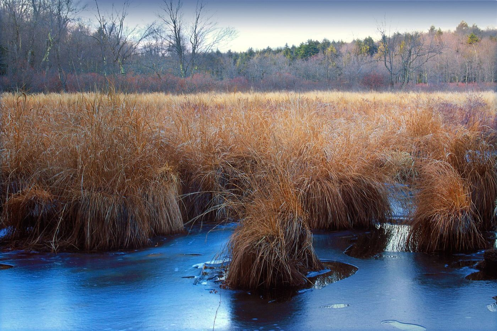
Lehigh River
Poconos · Pennsylvania
The home river. Tailwater trout, big freestone water, the spine of fly fishing in eastern Pennsylvania. Luke learned to read seams here before he could legally drive.
A guide is built by the water he comes up on. Luke's water started in the Pocono Mountains, went through the limestone country of Central Pennsylvania, ran east into the Catskills, and now lives in the Roaring Fork Valley. This is the lineage, river by river.

The home river. Tailwater trout, big freestone water, the spine of fly fishing in eastern Pennsylvania. Luke learned to read seams here before he could legally drive.
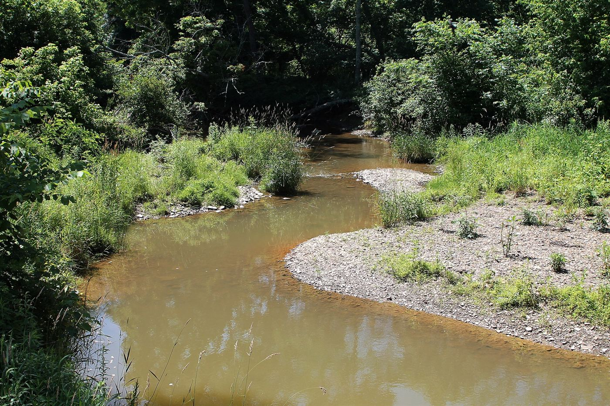
A cold, technical Pocono tributary of the Lehigh. The kind of small, pressured water that teaches you to fish carefully or not catch anything.
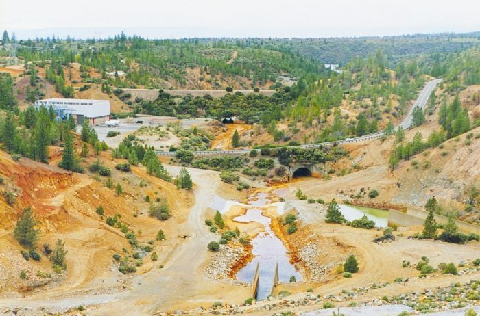
The limestone heartbeat of State College. The highest concentration of wild trout per mile of any stream in Pennsylvania. Home of Fisherman's Paradise — the oldest fly-fishing-only water in America. The water Joe Humphreys still fishes.
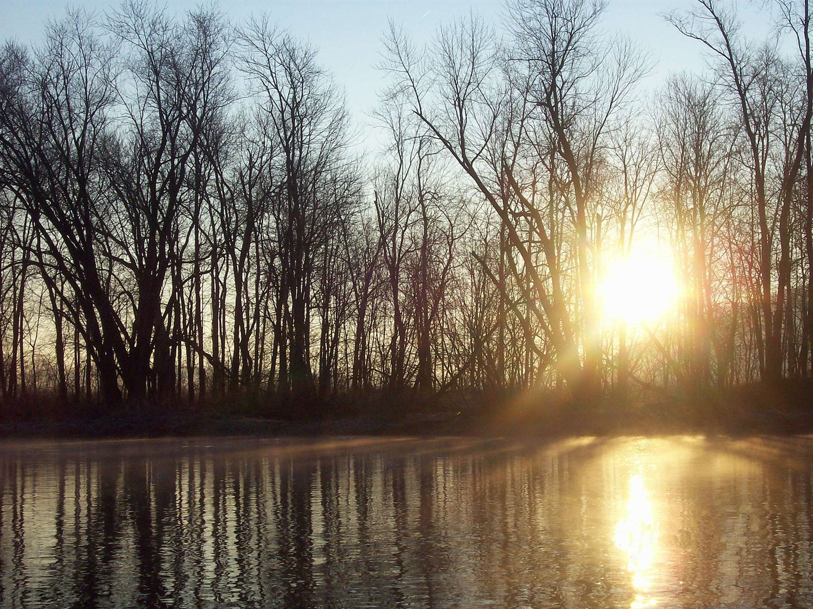
The longest limestone stream in Pennsylvania. Known as the "Bug Factory" for the density of its hatches. Class A wild trout water for eleven straight miles. The Green Drake hatch every spring is a pilgrimage.
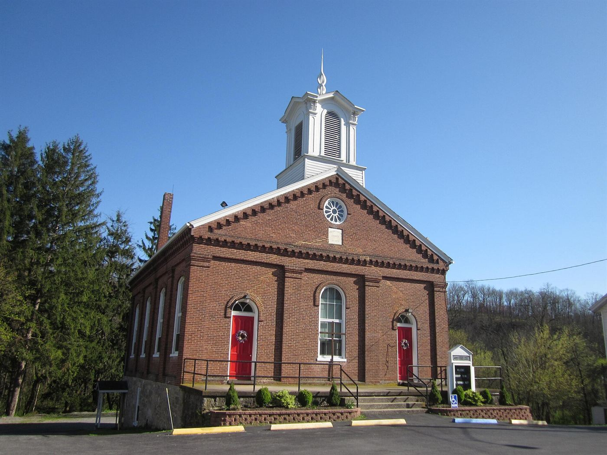
The water two sitting U.S. Presidents have fished. Limestone, technical, full of wild browns. Luke fished it during college whenever he could get a permission slip onto private water.
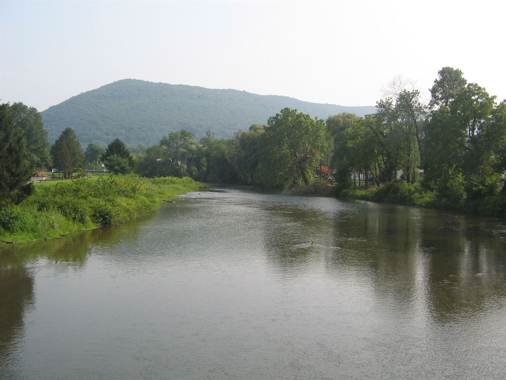
Wild browns in a tight valley. The kind of stream that rewards a careful approach and the right small fly. A regular stop on Luke's Central PA rotation.
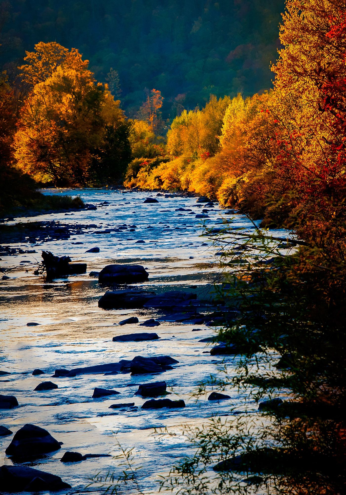
The literal birthplace of American fly fishing. Theodore Gordon fished here. The water that taught the country what dry-fly fishing looked like. Luke has fished it on multiple trips.
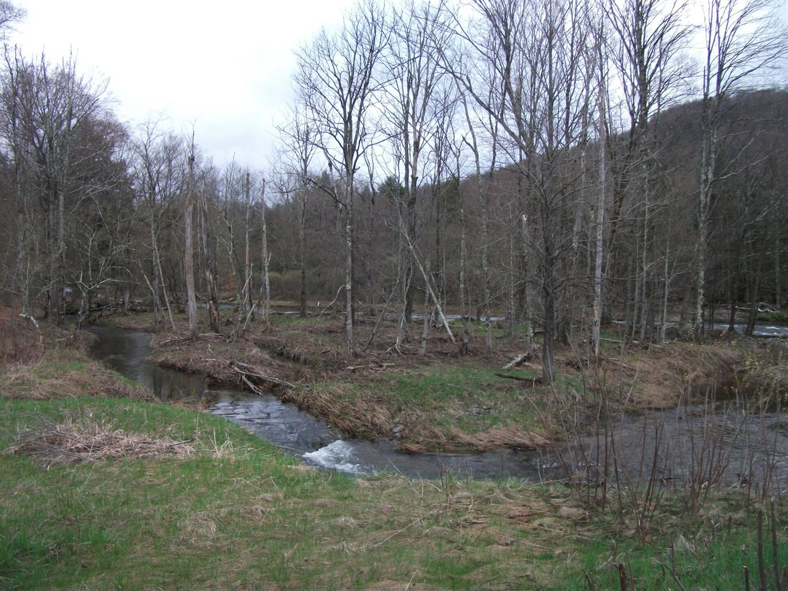
The Beaverkill's twin. Wild browns, technical pocket water, hatches that come off on schedule and reward anglers who studied them.
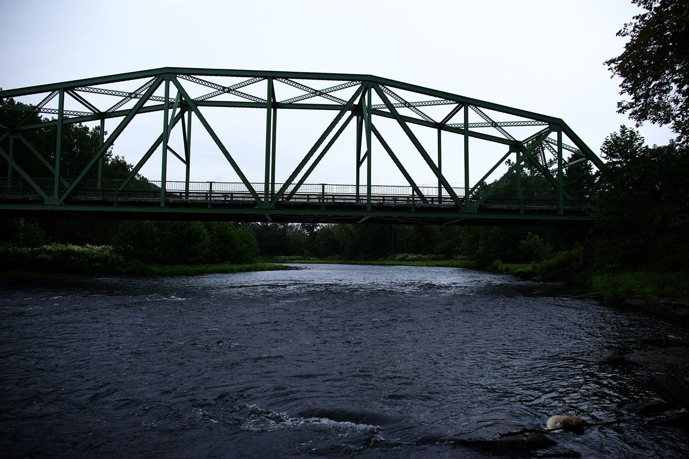
The West Branch, the East Branch, and the main stem. Big water, wild rainbows and browns, one of the best dry-fly fisheries in the eastern United States. Luke has fished it on multiple occasions.
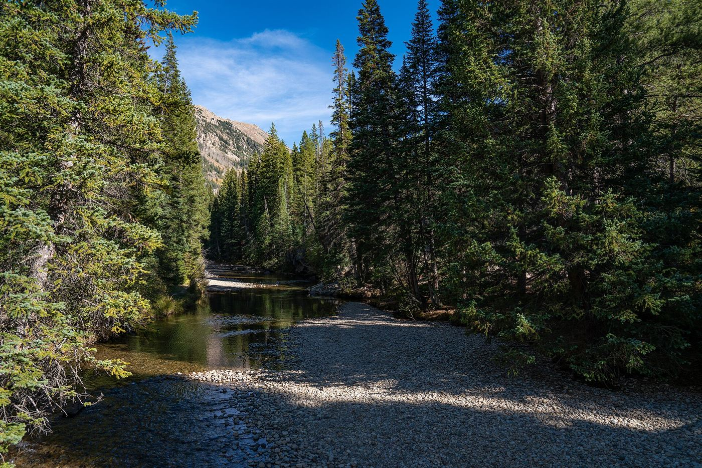
Luke's home river. Seventy miles from Independence Pass to the Colorado at Glenwood Springs. Gold Medal water from Hallum Lake to Upper Woody Creek — wild rainbows and browns in some of the most scenic water in the Rockies.
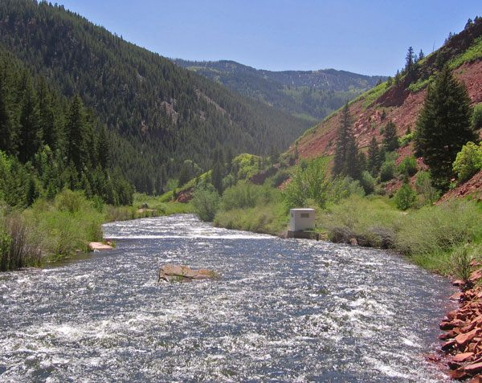
Fourteen miles of Gold Medal water below Ruedi Reservoir. Some of the most prolific insect hatches of any western river. Year-round fishing for browns, rainbows, cutthroats, brookies — and the occasional truly enormous trout.
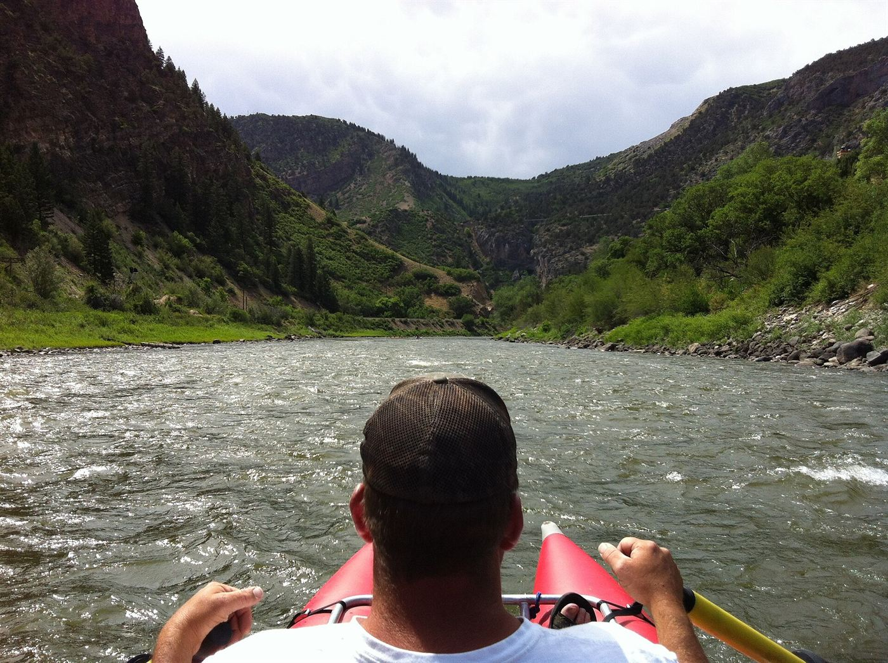
Float water with serious fish. Luke runs full-day floats for clients who want to cover ground, target larger fish, and see the canyon from the boat.
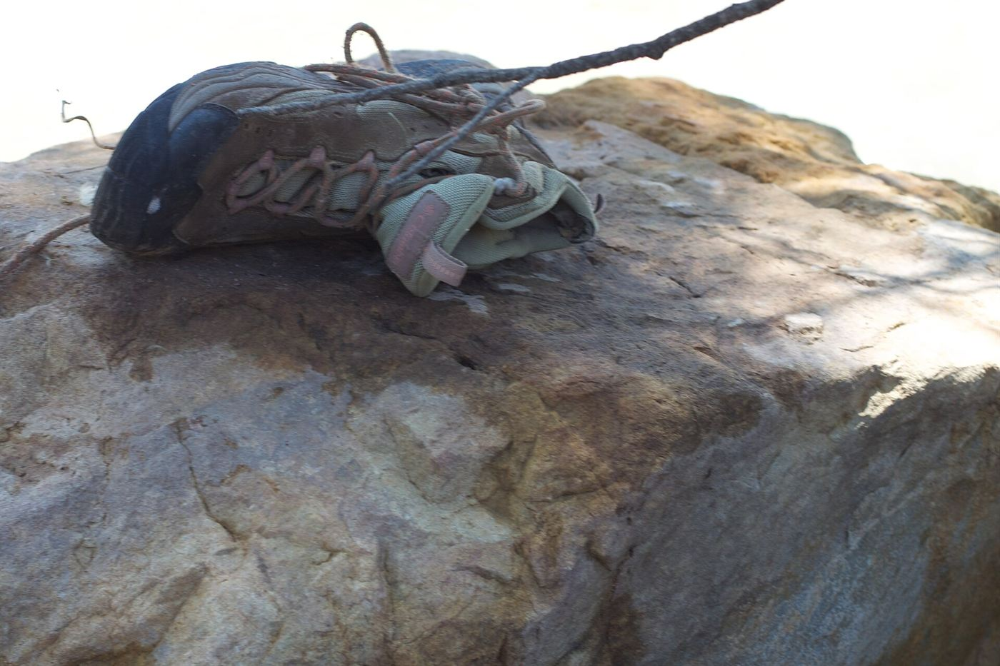
Freestone water in the upper Roaring Fork Valley. Smaller, more intimate fishing for wild trout — a great change of pace from the bigger rivers.
"You wanna talk fishin'? Fuhgeddaboudit."— The right answer
Or let Luke pick for you, based on the time of year and what's fishing well.
Plan a trip